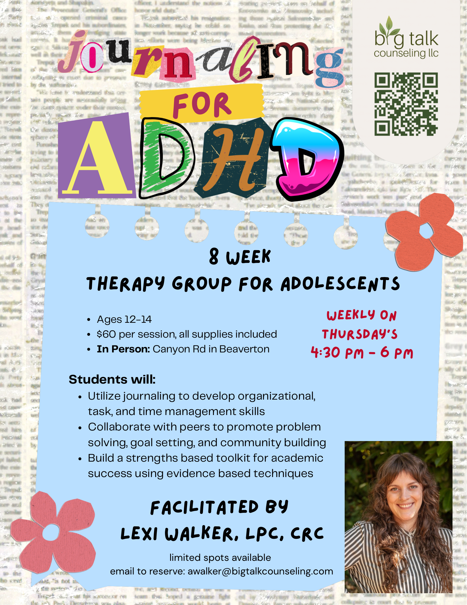
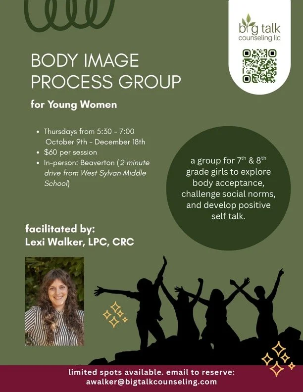
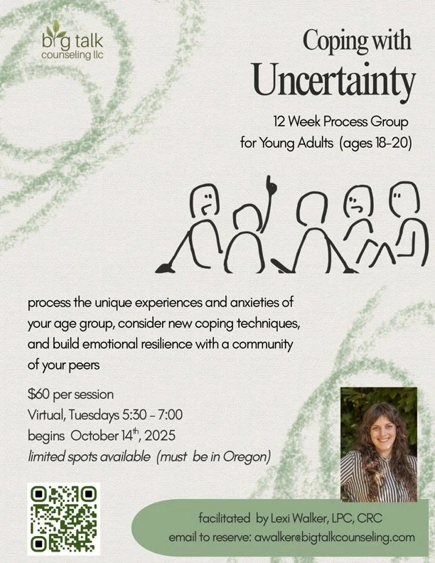

Services
Please Note
For telehealth sessions, clients will need access to a quiet private space and a stable internet connection to participate in counseling.
I'm looking for...
Individual Counseling
Sessions are typically 50 minutes long and begin at $150. Sessions are virtual, some in-person sessions may be available.
Modality: Emotion Focused Therapy (EFT) and Acceptance and Commitment Therapy (ACT)
Family Counseling
Sessions are typically 60 minutes and $225. Sessions are virtual, some in-person sessions may be available. Please inquire.
Group Counseling
Current / Upcoming Offerings
- Middle School: Using Craft-Journaling for Academic Success
- Ideal for students who may be struggling to keep up with organization and task management.
- Students will learn strategies for time management, goal setting, and organization
- High School: Craft Journaling: Goals and Intentions for Young Women with ADHD
- Ideal for creative adolescents interested in exploring journaling as a hobby
- Students will spend time goal setting and creating self care resources and personal toolkits
What to Expect
Fees
- Individual Counseling$150 per session
- Family Counseling$225 per session
- Counseling ConsultationFree
- Clinical or Private Practice Consultationfor providers$50 (30 mins)
- Group SessionsTBD
I also offer a limited number of sliding scale slots for those with a financial need and intersecting identities that have been historically marginalized. If the cost of counseling is a concern for you at this time, please inquire during our consultation.
Insurance
Changes are coming
Using Insurance? Big Talk is getting credentialed with new plans every month. Please inquire!
Out-Of-Network:
I can provide "Superbills" on a monthly or quarterly basis for clients who pay out of pocket at the time of their service. Most insurance companies offer reimbursement for services upon submission.
Upcoming Offerings:

Journaling for ADHD
Counseling Group for Ages 12-14
For the creative, spontaneous, and curious middle schooler. Come make community with neurodivergent peers, share academic tips and tricks, and have guided journaling support from a neurodivergent and crafty mental health therapist.
Details
- In Person, Beaverton OR
- $60 per session, supplies included
- Weekly on Thursday's, 4:30-6pm

Digital Parenting: How to talk about the Internet with your Teen
Webinar: April 21st 12:00-1:00 PCT
Internet safety, social media use, and the dangers of the dark web are not new fears modern parents. This webinar is designed for parents looking for supportive and compassionate conversation starters for talking to teens about the internet.
Details
- April 21st, 2026, 12:00-1:00pm PCT
- Zoom Webinar, Registration opens 1 month prior to event
- $25 Suggested Registration Fee, sliding scale options available
Past Group Offerings

